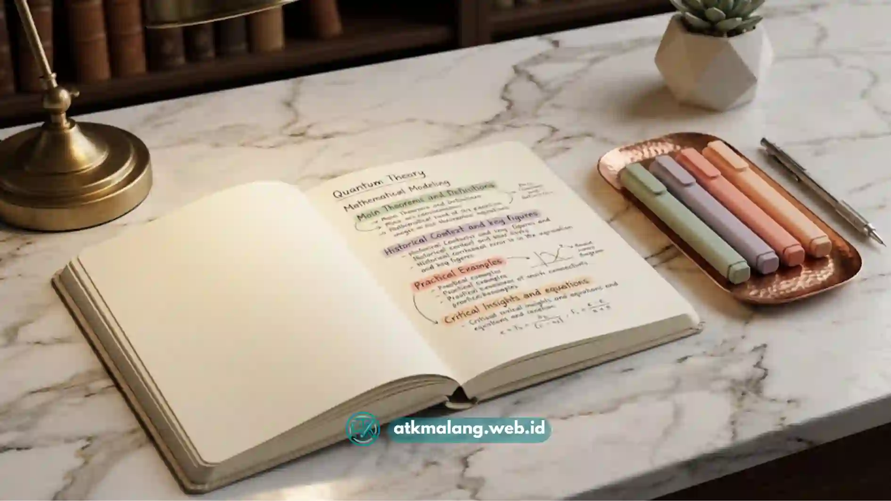

Rekomendasi warna stabilo untuk belajar yang paling umum digunakan adalah kuning, hijau, dan merah muda, karena ketiganya memberi kontras jelas tanpa membuat mata cepat lelah.
- Kuning cocok untuk informasi utama karena kontrasnya jelas namun tidak mencolok
- Hijau umum dipakai untuk contoh, ilustrasi, atau poin pendukung
- Merah muda atau oranye sering digunakan untuk data dan fakta penting
- Batasi penggunaan maksimal tiga hingga empat warna agar tidak membingungkan
- Pilih warna berdasarkan fungsi, bukan sekadar preferensi estetika
Daftar Isi
Mengapa Pemilihan Warna Stabilo Memengaruhi Fokus Belajar?
Warna yang dipilih untuk menandai teks dapat memengaruhi seberapa cepat mata menangkap informasi saat halaman dibuka kembali.
Warna yang terlalu terang atau terlalu banyak digunakan dalam satu halaman cenderung membuat mata cepat lelah dan sulit membedakan bagian penting.
Sebaliknya, warna yang dipilih dengan mempertimbangkan tingkat kontras dan fungsi tertentu dapat membantu otak mengenali pola secara lebih cepat.
Inilah sebabnya banyak pelajar akhirnya mengembangkan sistem warna pribadi yang konsisten digunakan di berbagai mata pelajaran atau topik.
Oleh karena itu, memilih warna Alat Tulis Kantor yang tepat sangat membantu proses kognitif Anda.
Warna Stabilo Apa yang Paling Baik untuk Belajar?
Secara umum, warna-warna dengan kontras sedang seperti kuning, hijau muda, dan oranye lebih nyaman digunakan dalam jangka panjang dibandingkan warna yang sangat terang seperti merah menyala atau ungu pekat.
Berikut gambaran fungsi warna yang umum digunakan:
- Kuning: cocok untuk menandai definisi atau konsep utama karena kontrasnya cukup jelas namun tetap nyaman di mata
- Hijau: sering dipakai untuk contoh kasus, ilustrasi, atau penjelasan tambahan
- Oranye atau merah muda: umum digunakan untuk data, angka, atau fakta yang perlu diingat secara spesifik
- Biru muda: bisa digunakan untuk menandai bagian yang masih perlu ditanyakan atau dipelajari ulang
Kombinasi ini bisa disesuaikan, namun prinsip utamanya adalah konsistensi fungsi dari waktu ke waktu.

Gunakan kombinasi warna yang konsisten agar otak lebih mudah mengingat fungsi masing-masing warna.Bagaimana Kombinasi Warna Stabilo yang Tidak Membingungkan?
Kombinasi warna yang efektif biasanya terdiri dari maksimal tiga hingga empat warna, dengan masing-masing warna memiliki fungsi yang jelas dan tidak tumpang tindih.
Beberapa prinsip yang bisa diterapkan:
- Tetapkan fungsi tiap warna sebelum mulai membaca, bukan saat sedang membaca
- Hindari penggunaan lebih dari empat warna dalam satu buku catatan
- Gunakan warna yang sama untuk fungsi yang sama di semua mata pelajaran
- Sisakan area tanpa highlight sebagai jeda visual agar halaman tidak terlalu ramai
Dengan sistem yang konsisten, seseorang tidak perlu berpikir ulang setiap kali ingin menandai teks, karena fungsi warna sudah otomatis diingat.
Apakah Warna Stabilo Memengaruhi Daya Ingat?
Warna stabilo dapat membantu daya ingat secara tidak langsung, terutama karena asosiasi visual yang terbentuk antara warna tertentu dengan jenis informasi tertentu.
Ketika seseorang terbiasa mengaitkan warna kuning dengan definisi dan warna oranye dengan data, otak akan lebih cepat mengenali jenis informasi hanya dari warnanya saja tanpa perlu membaca ulang seluruh kalimat.
Namun, efek ini baru terasa optimal jika sistem warna digunakan secara konsisten dalam jangka waktu yang cukup lama, bukan hanya sesekali.
Tips Memilih Stabilo untuk Kebutuhan Belajar dan Kerja
Selain warna, kualitas tinta dan bentuk ujung stabilo juga memengaruhi kenyamanan penggunaan sehari-hari.
Beberapa hal yang perlu diperhatikan saat memilih:
- Pilih tinta yang tidak mudah luntur saat terkena tinta pena atau pensil
- Perhatikan ketebalan garis, sesuaikan dengan ukuran tulisan pada buku
- Pertimbangkan stabilo dengan dua ujung, tebal dan tipis, untuk fleksibilitas lebih
- Pastikan tinta cukup transparan agar teks asli tetap mudah dibaca
Warna stabilo yang tepat bukan sekadar soal selera, melainkan soal fungsi dan konsistensi.
Kuning, hijau, dan oranye menjadi kombinasi yang umum digunakan karena nyaman di mata dan mudah dibedakan fungsinya.
Yang lebih penting dari sekadar memilih warna adalah menetapkan sistem yang konsisten, sehingga highlight benar-benar membantu proses belajar dan bekerja, bukan hanya mempercantik tampilan halaman.